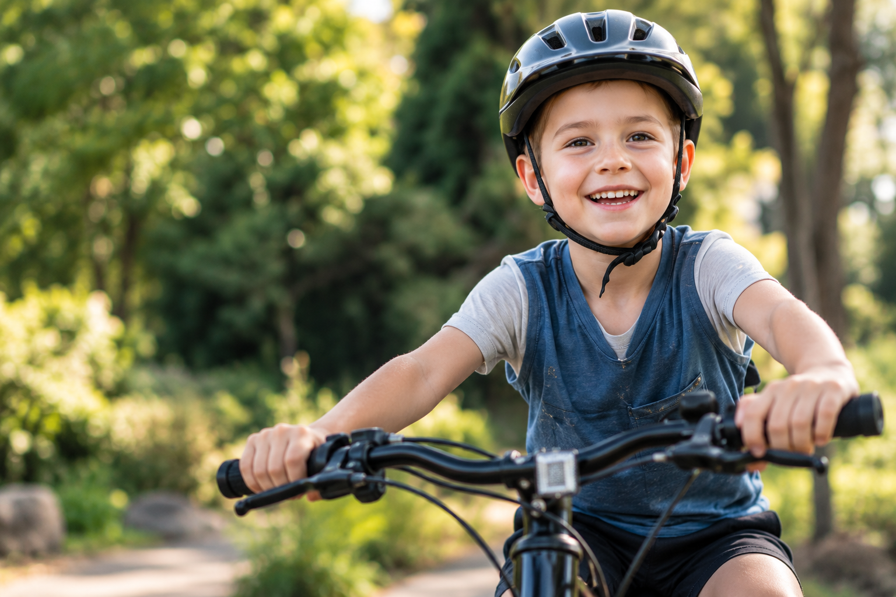
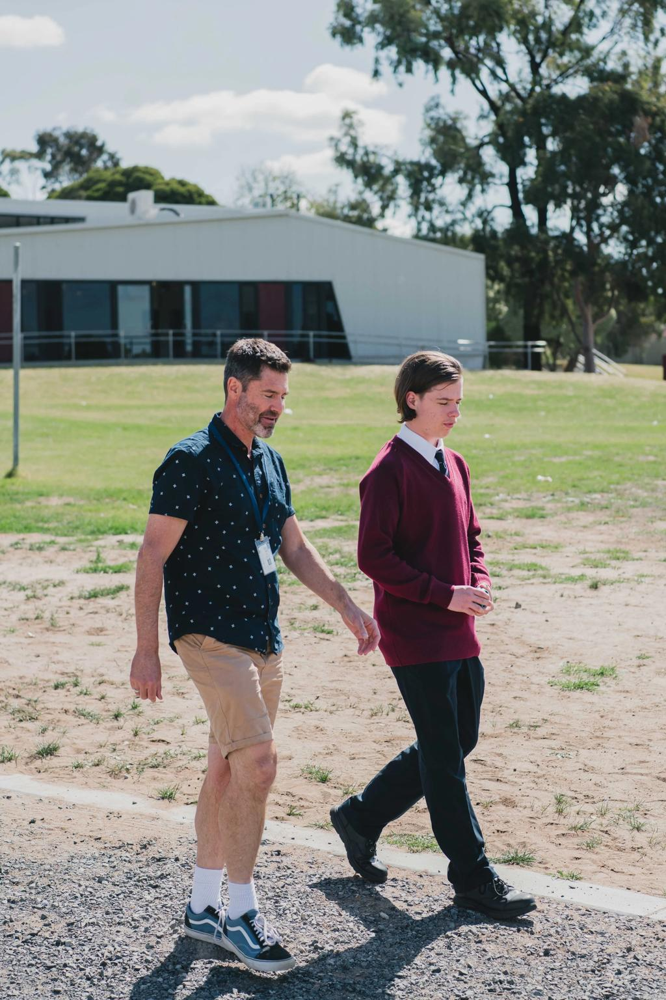
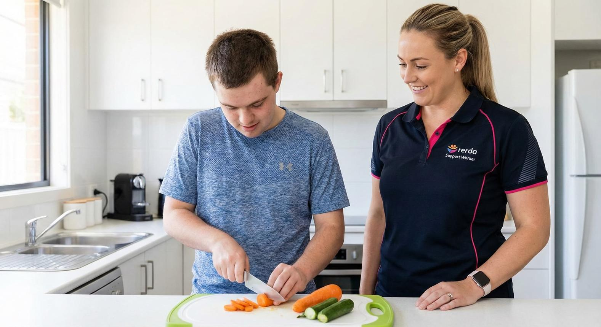
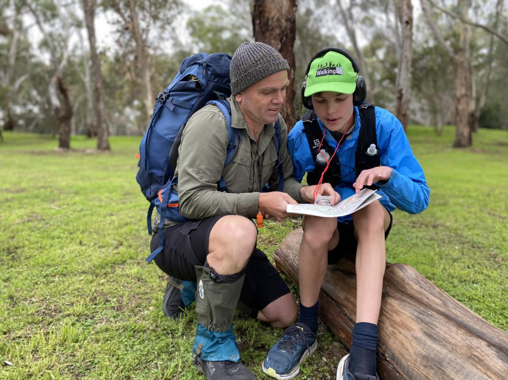
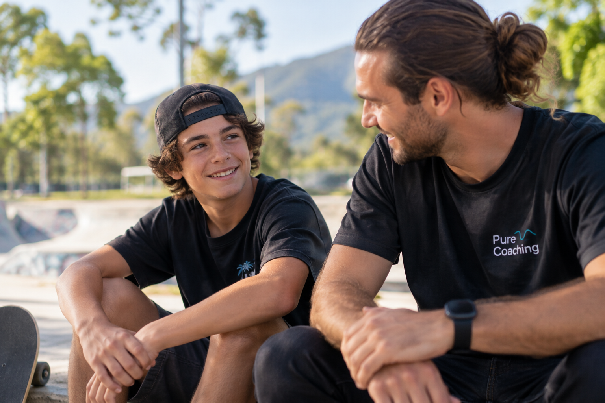
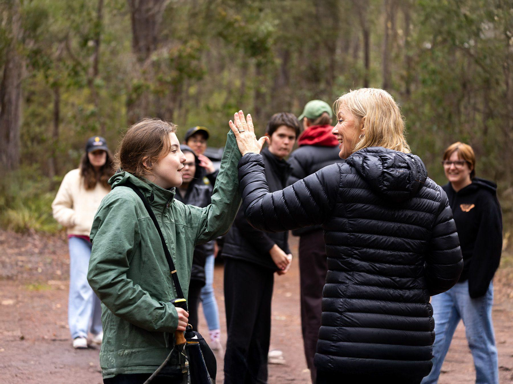

Make an enquiry
Complete a short enquiry form and our team will be in touch.
Make an Enquiry →Family and Children Support
Pure Coaching provides personalised, relationship-based support for children and young people, working alongside families, carers and professionals to create safe, positive and meaningful experiences.

How we work
Every young person is different. We take the time to understand their needs, interests, routines and goals, while working collaboratively with the people involved in their care.
Building trust through consistent, respectful and genuine support.
Keeping relevant carers and professionals informed where appropriate.
Support shaped around the young person rather than a fixed program.
Creating opportunities for confidence, participation, skill development and meaningful engagement.
Support in everyday life
From community activities to everyday life skills, support can take place in real-world environments and be shaped around each young person's interests and goals.





Family and Children Enquiry
If you're a Case Manager, carer, family member or professional, we'd love to hear from you. Get in touch to discuss a referral or make a Child Safety enquiry.
We are committed to creating safe, supportive and positive experiences for all children and young people.